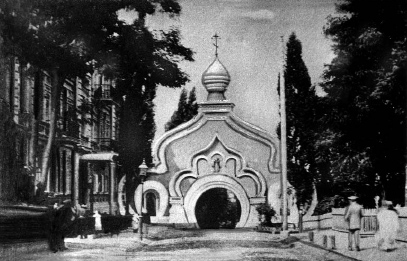
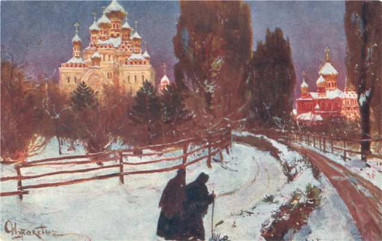
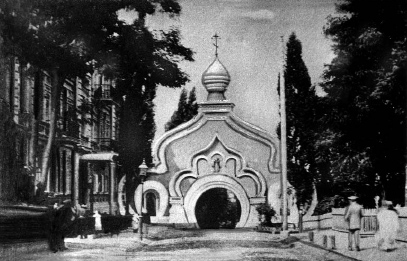
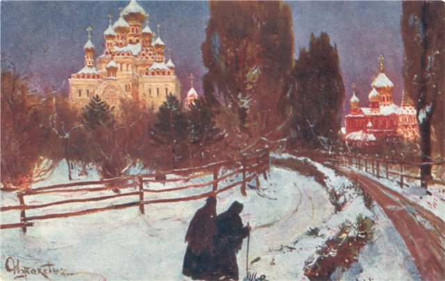

Пам'ятки України
Україна у складі Російської та Австрійської імперії
19 століттяПокровський монастир
Час заснування:
1889 р.
Засновник:
велика княгиня Олександра Петрівна
Архітектурний стиль:
російський
Місце розташування:
Київ
Вірування:
православ'я
1889 р.
Засновник:
велика княгиня Олександра Петрівна
Архітектурний стиль:
російський
Місце розташування:
Київ
Вірування:
православ'я
 


Цікаві факти:
Появу монастиря пророкував Феофіл Китаївський ще у 1840-х роках. Тоді на місці монастиря був сад, що належав Йосипу Никифоровичу Диковському. Відвідавши одного разу Йосипа Диковського, Феофіл сказав йому таке: «Молись рабе Божий Йосиф. Місце, на якому ми стоїмо з тобою, святе.
У 1889 році паралізована та прикута до інвалідної коляски внаслідок нещасного випадку велика княгиня Олександра Петрівна (яка з 1881 року мешкала у Києві) вирішила заснувати на Лук'янівці жіночий монастир і ряд благодійних закладів при ньому. За 50000 рублів у міста було викуплено дві суміжні земельні ділянки. Проекти церковних, житлових, лікарняних та господарчих будівель монастирського комплексу виконав архітектор В. М. Ніколаєв.